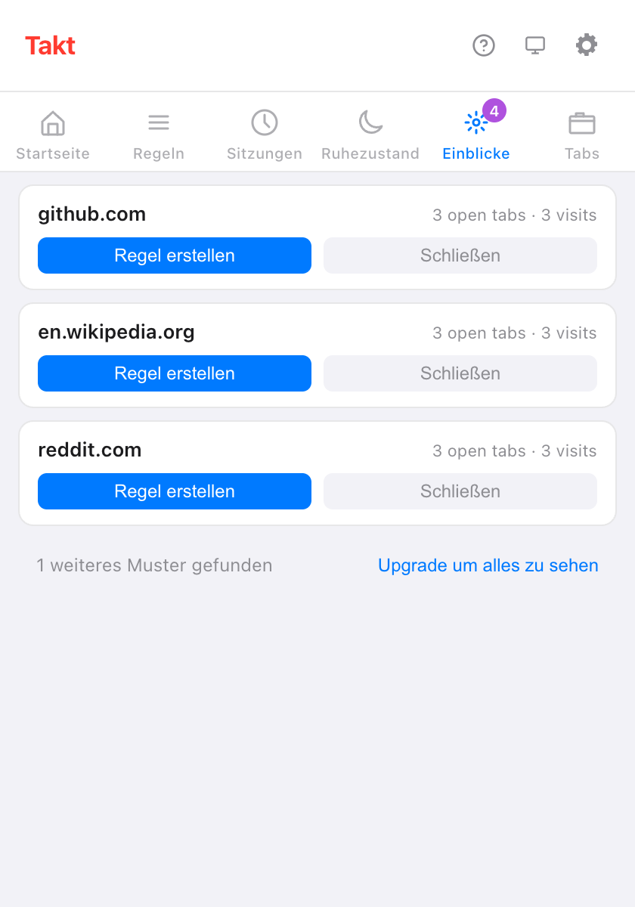
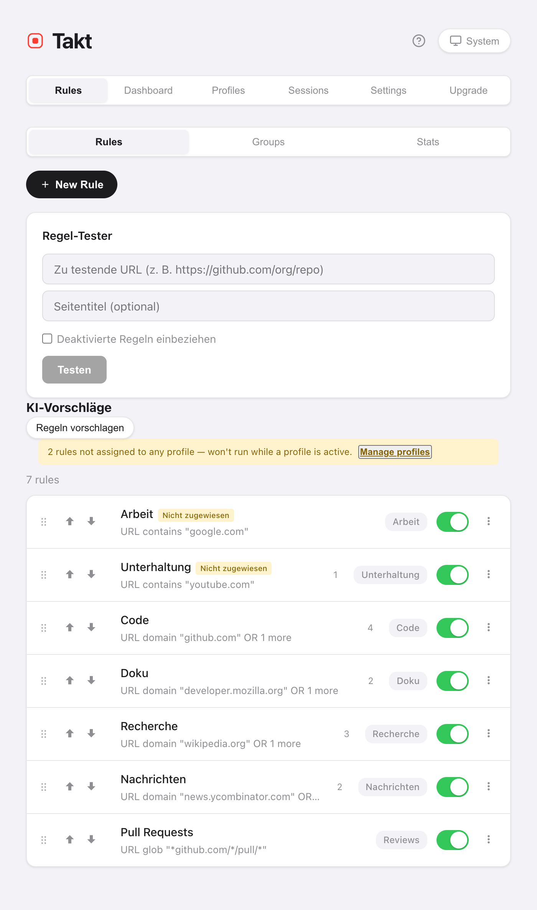

Kurz gesagt: Öffnen Sie im Takt-Popup den Bereich Einblicke. Jede Karte ist eine Website, die Sie oft nutzen und für die es noch keine Regel gibt. Klicken Sie auf Regel erstellen, prüfen Sie sie mit Passende Tabs anzeigen und speichern Sie.
- Vorschläge stammen aus Ihren offenen Tabs und Ihren letzten Besuchen, gezählt auf Ihrem Gerät.
- Regeln vorschlagen bittet Chromes lokale KI, Ihre offenen Websites zu Regeln zu gruppieren.
- Regel-Tester und Trefferzahlen zeigen, ob eine Regel tut, was Sie gemeint haben.
Woher kommen die Regelvorschläge?
Takt achtet auf Websites, die eindeutig eine eigene Gruppe verdienen. Es gibt drei Quellen:
| Quelle | Schlägt eine Website vor, wenn | Wo Sie sie sehen | Plan |
|---|---|---|---|
| Offene Tabs | 3 oder mehr Tabs von ihr offen oder hiberniert sind | Popup → Einblicke, Optionen → Rules | Free: 3 Karten gleichzeitig |
| Letzte Besuche | Sie sie in den letzten 7 Tagen 5-mal oder öfter geöffnet haben oder an 2 oder mehr Tagen besucht haben | Popup → Einblicke, Optionen → Rules | Free: 3 Karten gleichzeitig |
| KI-Vorschläge | Sie auf Regeln vorschlagen klicken | Optionen → Rules | Free, bis zur Grenze von 5 Regeln |
Eine Website, die bereits eine Regel vom Typ Domain oder enthält abdeckt, wird nie vorgeschlagen. Ebenso wenig alles, was Sie verworfen haben.
Wie funktioniert der Bereich Einblicke?
Jede Karte zeigt eine Website und den Grund für den Vorschlag, zum Beispiel „3 open tabs · 3 visits“. Dazu zwei Schaltflächen:
- Regel erstellen öffnet den Regel-Editor mit bereits eingetragener Website. Gespeichert wird erst, wenn Sie auf Speichern klicken.
- Schließen blendet die Karte aus. Verworfene Vorschläge bleiben auf der Seite Rules der Optionen aufgelistet, wo Sie sie wiederherstellen können.
Im kostenlosen Plan sehen Sie die ersten 3 Karten und eine Zeile wie „1 weiteres Muster gefunden“. Premium ($3/Monat oder $30/Jahr) zeigt alle.

Was speichert Takt, um Vorschläge zu machen?
Nur Website-Namen und Zählungen. Wenn im Regelmodus ein neuer Tab auf keine Ihrer Regeln passt, zählt Takt einen Besuch für diese Website. Gespeichert werden:
- die Domain, eine Besuchszahl sowie der erste und letzte Zeitpunkt, an dem Takt sie gesehen hat;
- nur Einträge der letzten 7 Tage und höchstens 1.000 Websites;
- nichts aus Inkognito-Fenstern.
Die Daten liegen im lokalen Erweiterungsspeicher von Chrome und verlassen Ihren Browser nie. Clear tab pattern history unter Settings löscht sie. Wenn Sie die optionale Berechtigung für den Browserverlauf erteilen, stammen die Besuchszahlen auf jeder Karte stattdessen aus Chromes eigenem Verlauf der letzten 90 Tage.
Was sind KI-Regelvorschläge?
Auf der Seite Rules der Optionen sendet Regeln vorschlagen die Liste der Websites aus Ihren offenen Tabs an Chromes integrierte Prompt API. Das Modell läuft auf Ihrem Gerät, gruppiert die Websites nach Thema und benennt jede Gruppe. Übergeben werden nur Website-Namen: keine Titel, keine Seiteninhalte.
- Jeder Vorschlag hat Regel hinzufügen und Verwerfen. Regel hinzufügen speichert die Regel sofort, aktiviert.
- Der erste Durchlauf kann eine Minute dauern, während Chrome das Modell vorbereitet.
- Auf einem Gerät, das das Modell nicht ausführen kann, sehen Sie „KI-Vorschläge sind auf diesem Gerät nicht verfügbar.“
- Im kostenlosen Plan erhalten Sie so viele Vorschläge, wie Sie noch freie Regelplätze von 5 haben.
Wie teste ich eine Regel, bevor ich mich auf sie verlasse?
Zwei Werkzeuge auf der Seite Rules der Optionen:
- Regel-Tester. Fügen Sie eine URL und optional einen Seitentitel ein. Takt antwortet mit „Matches: Regel → Gruppe“ oder „Keine passende Regel“. Haken Sie Deaktivierte Regeln einbeziehen an, um ausgeschaltete Regeln zu testen.
- Passende Tabs anzeigen. Im Regel-Editor listet diese Funktion die offenen Tabs aller Fenster auf, die Ihre noch nicht gespeicherten Bedingungen erfassen würden. Passt keiner, erscheint „Keine Tabs entsprechen dieser Regel.“

Woran erkenne ich, dass eine Regel funktioniert?
Jede Regel in der Liste zeigt, wie viele Tabs sie in ihre Gruppe eingeordnet hat. Ein Tab zählt, wenn die Regel ihn aus „ungruppiert“ herausholt.
Die Ansicht Stats ergänzt die Summen: organisierte Tabs, Tabs pro Tag, Ihre Top-Regel und Ihre 10 meistgenutzten Regeln. Eine Regel, die eine Woche lang bei null bleibt, verdient einen zweiten Blick mit dem Regel-Tester. Statistiken zurücksetzen beginnt die Zählung von vorn.
Kann ich eine Regel aus der aktuellen Seite erstellen? Premium
Ja. Klicken Sie mit der rechten Maustaste auf die Seite und wählen Sie Regel aus diesem Tab erstellen. Takt öffnet den Regel-Editor mit einem eingetragenen Glob-Muster wie *://github.com/*. Prüfen Sie es und speichern Sie.
Was Vorschläge nicht können
- Sie arbeiten Website für Website. Takt schlägt nicht „alle Pull Requests“ über mehrere Repos vor. Dafür schreiben Sie eine Glob- oder Regex-Regel (Premium).
- Vorschläge aus offenen Tabs brauchen 3 Tabs von einer Website. Zwei Tabs erzeugen keine Karte.
- KI-Vorschläge hängen von Chromes lokalem Modell ab. Ältere oder leistungsschwache Computer erhalten sie unter Umständen nicht.
- Vorschläge speisen den Regelmodus. Wenn Sie lieber gar keine Regeln schreiben, versuchen Sie die Gruppierung nach Kategorie oder per KI.
Öffnen Sie Tabs wie gewohnt. Takt sagt Ihnen, welche Regel Sie schreiben sollten.
Zu Chrome hinzufügen — kostenlosHäufige Fragen
Wie entscheidet Takt, welche Regeln es vorschlägt?
Eine Website kommt infrage, wenn 3 oder mehr Tabs von ihr offen sind oder Sie sie in den letzten 7 Tagen 5-mal (oder an 2 Tagen) besucht haben – sofern keine Regel sie abdeckt.
Sind Regelvorschläge kostenlos?
Ja. Im kostenlosen Plan sehen Sie 3 Karten in Einblicke gleichzeitig und KI-Vorschläge bis zur Grenze von 5 Regeln. Premium ($3/Monat oder $30/Jahr) zeigt alle.
Senden KI-Regelvorschläge meine Tabs irgendwohin?
Nein. Nur die Website-Namen Ihrer offenen Tabs gehen an Chromes lokales Modell. Siehe wie Takt Daten lokal hält.
Kann ich einen verworfenen Vorschlag zurückholen?
Ja. Die Seite Rules der Optionen listet verworfene Vorschläge auf, und Sie können sie dort wiederherstellen.